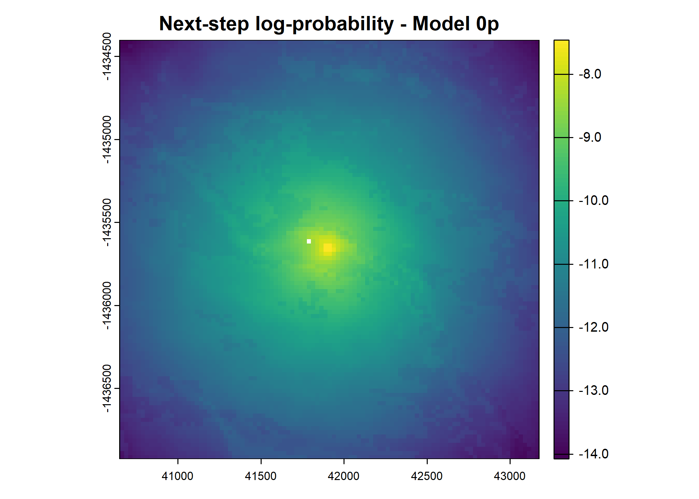
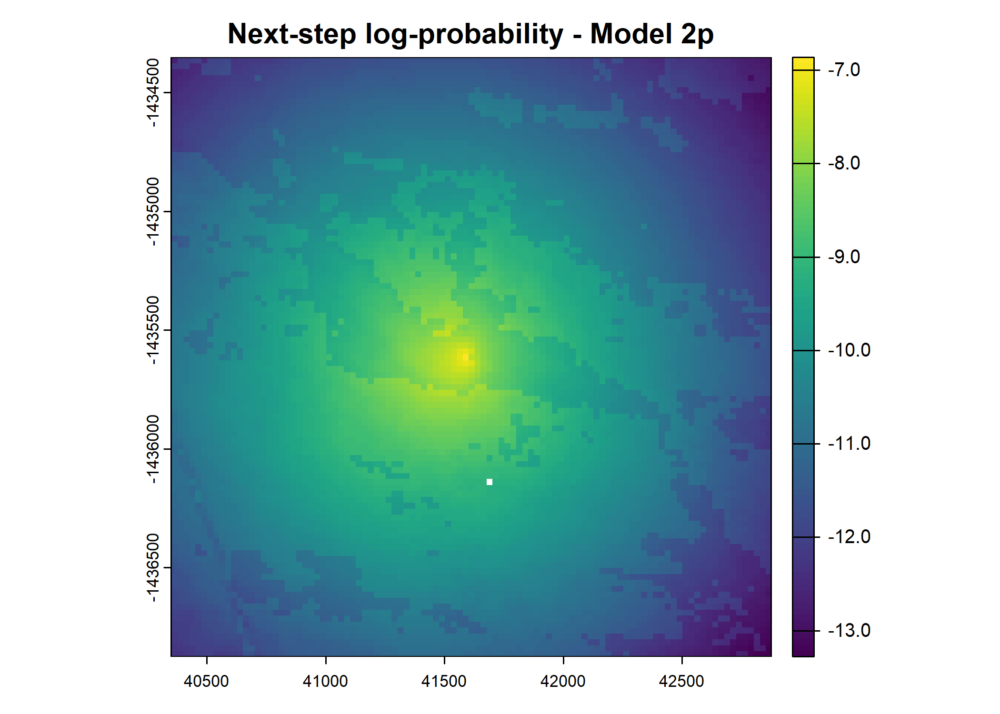

SSF Validation
Similar to the deepSSF next-step validation scripts, we can validate the fitted SSF models by assessing the predicted probability values at the location of the next step. We can do this for the movement, habitat selection and next-step probability surfcaes, providing information about the accuracy of each of these processes, and how that changes through time.
We fitted the SSF models (with and without temporal dynamics) in the SSF Model Fitting script, and we can use the fitted parameters to generate the movement, habitat sele
Whilst the realism and emergent properties of simulated trajectories are difficult to assess, we can validate the deepSSF models on their predictive performance at the next step, for each of the habitat selection, movement and next-step probability surfaces. Ensuring that the probability surfaces are normalised to sum to one, they can be compared to the predictions of typical step selection functions when the same probability surfaces are generated for the same local covariates. This approach not only allows for comparison between models, but can be informative as to when in the observed trajectory the model performs well or poorly, which can be analysed across the entire tracking period or for each hour of the day, and can lead to critical evaluation of the covariates that are used by the models and allow for model refinement.
Loading packages
Reading in the environmental covariates
Code
ndvi_projected <- rast("mapping/cropped rasters/ndvi_GEE_projected_watermask20230207.tif")
terra::time(ndvi_projected) <- as.POSIXct(lubridate::ymd("2018-01-01") + months(0:23))
slope <- rast("mapping/cropped rasters/slope_raster.tif")
veg_herby <- rast("mapping/cropped rasters/veg_herby.tif")
canopy_cover <- rast("mapping/cropped rasters/canopy_cover.tif")
# change the names (these will become the column names when extracting
# covariate values at the used and random steps)
names(ndvi_projected) <- rep("ndvi", terra::nlyr(ndvi_projected))
names(slope) <- "slope"
names(veg_herby) <- "veg_herby"
names(canopy_cover) <- "canopy_cover"
# to plot the rasters
plot(ndvi_projected)

Generating the data to fit a deepSSF model
Set up the spatial extent of the local covariates
Code
# get the resolution from the covariates
res <- terra::res(ndvi_projected)[1]
# how much to trim on either side of the location,
# this will determine the extent of the spatial inputs to the deepSSF model
buffer <- 1250 + (res/2)
# calculate the number of cells in each axis
nxn_cells <- buffer*2/res
# hourly lag - to set larger time differences between locations
hourly_lag <- 1Evaluate next-step ahead predictions
Create distance and bearing layers for the movement probability
Code
image_dim <- 101
pixel_size <- 25
center <- image_dim %/% 2
# Create matrices of indices
x <- matrix(rep(0:(image_dim - 1), image_dim), nrow = image_dim, byrow = TRUE)
y <- matrix(rep(0:(image_dim - 1), each = image_dim), nrow = image_dim, byrow = TRUE)
# Compute the distance layer
distance_layer <- sqrt((pixel_size * (x - center))^2 + (pixel_size * (y - center))^2)
# Change the center cell to the average distance from the center to the edge of the pixel
distance_layer[center + 1, center + 1] <- 0.56 * pixel_size
# Compute the bearing layer
bearing_layer <- atan2(center - y, x - center)
# Convert the distance and bearing matrices to raster layers
distance_layer <- rast(distance_layer)
bearing_layer <- rast(bearing_layer)
# Optional: Plot the distance and bearing rasters
plot(distance_layer, main = "Distance from Center")Calculating the habitat selection probabilities
The habitat selection term of a step selection function is typically modelled analogously to a resource-selection function (RSF), that assumes an exponential (log-linear) form as
\[ \omega(\mathbf{X}(s_t); \boldsymbol{\beta}(\tau; \boldsymbol{\alpha})) = \exp(\beta_{1}(\tau; \boldsymbol{\alpha}_1) X_1(s_t) + \cdots + \beta_{n}(\tau; \boldsymbol{\alpha}_n) X_n(s_t)), \]
where \(\boldsymbol{\beta}(\tau; \boldsymbol{\alpha}) = (\beta_{1}(\tau; \boldsymbol{\alpha}_1), \ldots, \beta_{n}(\tau; \boldsymbol{\alpha}_n))\) in our case,
\[ \beta_i(\tau; \boldsymbol{\alpha}_i) = \alpha_{i,0} + \sum_{j = 1}^P \alpha_{i,j} \sin \left(\frac{2j \pi \tau}{T} \right) + \sum_{j = 1}^P \alpha_{i,j + P} \cos \left(\frac{2j \pi \tau}{T} \right), \]
and \(\boldsymbol{\alpha}_i = (\alpha_{i, 0}, \dots, \alpha_{i, 2P})\), where \(P\) is the number of pairs of harmonics, e.g. for \(P = 2\), for each covariate there would be two sine terms and two cosine terms, as well as the linear term denoted by \(\alpha_{i, 0}\). The \(+ P\) term in the \(\alpha\) index of the cosine term ensures that each \(\alpha_i\) coefficient in \(\boldsymbol{\alpha}_i\) is unique.
To aid the computation of the simulations, we can precompute \(\omega(\mathbf{X}(s_t); \boldsymbol{\beta}(\tau; \boldsymbol{\alpha}))\) for each hour prior to running the simulations.
In the dataframe of temporally varying coefficients, for each covariate we have reconstructed \(\beta_{i}(\tau; \boldsymbol{\alpha}_i)\) and discretised for each hour of the day, resulting in \(\beta_{i,\tau}\) for \(i = 1, \ldots, n\) where \(n\) is the number of covariates and \(\tau = 1, \ldots, 24\).
Given these, we can solve \(\omega(\mathbf{X}(s_t); \boldsymbol{\beta}(\tau; \boldsymbol{\alpha}))\) for every hour of the day. This will result in an RSF map for each hour of the day, which we will use in the simulations.
Then, when we do our step selection simulations, we can just subset these maps by the current hour of the day, and extract the values of \(\omega(\mathbf{X}(s_t); \boldsymbol{\beta}(\tau; \boldsymbol{\alpha}))\) for each proposed step location, rather than solving \(\omega(\mathbf{X}(s_t); \boldsymbol{\beta}(\tau; \boldsymbol{\alpha}))\) for every step location.
Calculating the next-step probabilities for the 0p and 2p models
Select model coefficients
Setting up the data
Read in the data of all individuals, which includes the focal or ‘in-sample’ individual that the model was fitted to, as well as the data of the ‘out-of-sample’ individuals that the model has never seen before, and which is from quite a different environmental space (more on the floodplain and closer to the river system).
Code
[1] "buffalo_2005_data_df_lag_1hr_n10297.csv"
[2] "buffalo_2014_data_df_lag_1hr_n6572.csv"
[3] "buffalo_2018_data_df_lag_1hr_n9440.csv"
[4] "buffalo_2021_data_df_lag_1hr_n6928.csv"
[5] "buffalo_2022_data_df_lag_1hr_n9099.csv"
[6] "buffalo_2024_data_df_lag_1hr_n9531.csv"
[7] "buffalo_2039_data_df_lag_1hr_n5569.csv"
[8] "buffalo_2154_data_df_lag_1hr_n10417.csv"
[9] "buffalo_2158_data_df_lag_1hr_n9700.csv"
[10] "buffalo_2223_data_df_lag_1hr_n5310.csv"
[11] "buffalo_2327_data_df_lag_1hr_n8983.csv"
[12] "buffalo_2387_data_df_lag_1hr_n10409.csv"
[13] "buffalo_2393_data_df_lag_1hr_n5299.csv" Code
ids <- substr(buffalo_data_ids, 9, 12)
# import data
buffalo_id_list <- vector(mode = "list", length = length(buffalo_data_ids))
# read in the data
for(i in 1:length(buffalo_data_ids)){
buffalo_id_list[[i]] <- read.csv(paste("buffalo_local_data_id/",
buffalo_data_ids[[i]],
sep = ""))
buffalo_id_list[[i]]$id <- ids[i]
}Calculating the next-step probabilities
This scrip takes a long time to run. As we have already calculated the next-step probabilities for all individuals and all steps we will just calculate a subset of the next-step predictions for illustration.
Loop over all individuals and models
This script loops over all individuals and models, and calculates the next-step probabilities for each step of the individual.
Here’s high-level overview of the full chunk below
Outermost loop: for(k in 1:length(buffalo_id_list)) {...}
Data Preparation and Subsetting
- Each buffalo’s trajectory (
data_id) is filtered to retain location steps within the local spatial spatial extent (±1250m). - Any steps with missing data (e.g., turning angle,
ta) are removed. - The data is used to define a local bounding box (
template_raster_crop) for cropping relevant raster datasets. This bounding box covers the extent of all points for that individual, and is for computational efficiency (so the full raster isn’t being subsetted at every step). This is only done once per individual and is not the same as the local cropping done at every step.
- Each buffalo’s trajectory (
Covariate Rasters Cropped to Bounding Box
- NDVI (Normalized Difference Vegetation Index - including squared term)
- Canopy Cover (including squared term)
- Herbaceous Vegetation
- Slope
Middle loop: for(j in 1:length(model_harmonics)) {...}
SSF Models
- The script selects one of the two models:
0p(no temporal harmonics) or2p(temporal harmonics), indicated bymodel_harmonics. - Corresponding coefficients for each model are read from CSV files (e.g.,
"ssf_coefficients/id{focal_id}_{model_harmonics[j]}Daily_coefs_{model_date}.csv"). - Only integer hours are used (filtered via
hour %% 1 == 0).
- The script selects one of the two models:
Inner loop: for (i in 2:n) {..}
Loop Over Steps
For each step in the buffalo’s trajectory:Extract Local Covariates
A subset of each covariate raster is cropped to the step’s spatial extent.Habitat Selection Probability
- Relevant coefficients (e.g.,
ndvi,ndvi_2,canopy,canopy_2,herby,slope) for the current hour are retrieved, given the model. - A log-probability (
habitat_log) is computed from the linear combination of covariates. - The habitat selection probability is calculated by exponentiating the log-probability and normalising it to sum to 1.
- Relevant coefficients (e.g.,
Movement Probability
- Step length is modeled via a Gamma distribution (using
shapeandscaleparameters). - Turning angle is modeled via the von Mises distribution (using
kappaand a mean angle based on the previous step’s bearing). - The log-probability of these components is combined (
move_log) and normalised.
- Step length is modeled via a Gamma distribution (using
Next-Step Probability
- The habitat and movement log-probabilities are summed to get the next-step log-probability.
- It is normalised to yield the next-step probability for each candidate pixel (where all pixels sum to 1).
- The script then extracts the probability at the buffalo’s actual next location (
prob_next_step_ssf_0porprob_next_step_ssf_2p).
Outputs
- For each step, the script appends probabilities (
prob_habitat_ssf_0/2p,prob_movement_ssf_0/2p, andprob_next_step_ssf_0/2p) to the data frame.
Diagnostic Plots
- For the first few steps of the first buffalo (which is the focal id), the script plots local covariate layers and the log-probability surfaces (habitat, movement, and combined next-step).
Code
#-------------------------------------------------------------------------
### Select a buffalo's data
#-------------------------------------------------------------------------
for(k in 1:length(buffalo_id_list)) {
data_id <- buffalo_id_list[[k]]
attr(data_id$t_, "tzone") <- "Australia/Queensland"
attr(data_id$t2_, "tzone") <- "Australia/Queensland"
data_id <- data_id %>% mutate(
year_t2 = year(t2_),
yday_t2_2018_base = ifelse(year_t2 == 2018, yday_t2, 365+yday_t2)
)
sample_extent <- 1250
# remove steps that fall outside of the local spatial extent
data_id <- data_id %>%
filter(x2_cent > -sample_extent &
x2_cent < sample_extent &
y2_cent > -sample_extent &
y2_cent < sample_extent) %>%
drop_na(ta)
# max(data_id$yday_t2_2018_base)
# write_csv(data_id, paste0("buffalo_local_data_id/validation/validation_", buffalo_data_ids[k]))
model_harmonics <- c("0p", "2p")
# test_data <- data_id %>% slice(1:10) # test with a subset of the data
test_data <- data_id
# subset rasters around all of the locations of the current buffalo (speeds up local subsetting)
buffer <- 2000
template_raster_crop <- terra::rast(xmin = min(test_data$x2_) - buffer,
xmax = max(test_data$x2_) + buffer,
ymin = min(test_data$y2_) - buffer,
ymax = max(test_data$y2_) + buffer,
resolution = 25,
crs = "epsg:3112")
## Crop the rasters
ndvi_projected_cropped <- terra::crop(ndvi_projected, template_raster_crop)
ndvi_projected_cropped_sq <- ndvi_projected_cropped^2
canopy_cover_cropped <- terra::crop(canopy_cover, template_raster_crop)
canopy01_cropped <- canopy_cover_cropped/100
canopy01_cropped_sq <- canopy01_cropped^2
veg_herby_cropped <- terra::crop(veg_herby, template_raster_crop)
slope_cropped <- terra::crop(slope, template_raster_crop)
tic()
#-------------------------------------------------------------------------
### Select a model (without temporal dynamics - 0p, or with temporal dynamics - 2p)
#-------------------------------------------------------------------------
for(j in 1:length(model_harmonics)) {
ssf_coefs_file_path <- paste0("ssf_coefficients/id", focal_id, "_", model_harmonics[j], "Daily_coefs_", model_date, ".csv")
print(ssf_coefs_file_path)
ssf_coefs <- read_csv(ssf_coefs_file_path)
# keep only the integer hours using the modulo operator
ssf_coefs <- ssf_coefs %>% filter(ssf_coefs$hour %% 1 == 0)
# for the progress bar - uncomment the line depending on if using subset
# for all data
# n <- nrow(test_data)
# for the subset
n <- n_samples_subset
pb <- progress_bar$new(
format = " Progress [:bar] :percent in :elapsed",
total = n,
clear = FALSE
)
tic()
#-------------------------------------------------------------------------
### Loop over every step in the trajectory
#-------------------------------------------------------------------------
# to calculate the next step probabilities for all samples
# for (i in 2:n) {
# for the subset
for (i in 2:(n_samples_subset+1)) {
sample_tm1 <- test_data[i-1, ] # get the step at t - 1 for the bearing of the approaching step
sample <- test_data[i, ]
sample_extent <- ext(sample$x_min, sample$x_max, sample$y_min, sample$y_max)
#-------------------------------------------------------------------------
### Extract local covariates
#-------------------------------------------------------------------------
# NDVI
ndvi_index <- which.min(abs(difftime(sample$t_, terra::time(ndvi_projected_cropped))))
ndvi_sample <- crop(ndvi_projected[[ndvi_index]], sample_extent)
# NDVI ^ 2
ndvi_sq_sample <- crop(ndvi_projected_cropped_sq[[ndvi_index]], sample_extent)
# Canopy cover
canopy_sample <- crop(canopy01_cropped, sample_extent)
# Canopy cover ^ 2
canopy_sq_sample <- crop(canopy01_cropped_sq, sample_extent)
# Herbaceous vegetation
veg_herby_sample <- crop(veg_herby_cropped, sample_extent)
# Slope
slope_sample <- crop(slope_cropped, sample_extent)
# create a SpatVector from the coordinates
next_step_vect <- vect(cbind(sample$x2_, sample$y2_), crs = crs(ndvi_sample))
#-------------------------------------------------------------------------
### calculate the next-step probability surfaces
#-------------------------------------------------------------------------
### Habitat selection probability
#-------------------------------------------------------------------------
# get the coefficients for the appropriate hour
coef_hour <- which(ssf_coefs$hour == sample$hour_t2)
# multiply covariate values by coefficients
# ndvi
ndvi_linear <- ndvi_sample * ssf_coefs$ndvi[[coef_hour]]
ndvi_quad <- ndvi_sq_sample * ssf_coefs$ndvi_2[[coef_hour]]
# canopy cover
canopy_linear <- canopy_sample * ssf_coefs$canopy[[coef_hour]]
canopy_quad <- canopy_sq_sample * ssf_coefs$canopy_2[[coef_hour]]
# veg_herby
veg_herby_pred <- veg_herby_sample * ssf_coefs$herby[[coef_hour]]
# slope
slope_pred <- slope_sample * ssf_coefs$slope[[coef_hour]]
# combining all covariates (on the log-scale)
habitat_log <- ndvi_linear + ndvi_quad + canopy_linear + canopy_quad + slope_pred + veg_herby_pred
# create template raster
habitat_pred <- habitat_log
# convert to normalised probability
habitat_pred[] <- exp(values(habitat_log) - max(values(habitat_log), na.rm = T)) /
sum(exp(values(habitat_log) - max(values(habitat_log), na.rm = T)), na.rm = T)
# print(sum(values(habitat_pred)))
# habitat probability value at the next step
prob_habitat <- as.numeric(terra::extract(habitat_pred, next_step_vect)[2])
# print(paste0("Habitat probability: ", prob_habitat))
### Movement Probability
#-------------------------------------------------------------------------
# step lengths
# calculated on the log scale
step_log <- habitat_log
step_log[] <- dgamma(distance_values,
shape = ssf_coefs$shape[[coef_hour]],
scale = ssf_coefs$scale[[coef_hour]], log = TRUE)
# turning angles
ta_log <- habitat_log
vm_mu <- sample$bearing
vm_mu_updated <- ifelse(ssf_coefs$kappa[[coef_hour]] > 0, sample_tm1$bearing, sample_tm1$bearing - pi)
ta_log[] <- suppressWarnings(circular::dvonmises(bearing_values,
mu = vm_mu_updated,
kappa = abs(ssf_coefs$kappa[[coef_hour]]),
log = TRUE))
# combine the step and turning angle probabilities
move_log <- step_log + ta_log
# create template raster
move_pred <- habitat_log
# convert to normalised probability
move_pred[] <- exp(values(move_log) - max(values(move_log), na.rm = T)) /
sum(exp(values(move_log) - max(values(move_log), na.rm = T)), na.rm = T)
# print(sum(values(move_pred)))
# movement probability value at the next step
prob_movement <- as.numeric(terra::extract(move_pred, next_step_vect)[2])
# print(prob_movement)
# Next-step probability
#-------------------------------------------------------------------------
# calculate the next-step log probability
next_step_log <- habitat_log + move_log
# create template raster
next_step_pred <- habitat_log
# normalise using log-sum-exp trick
next_step_pred[] <- exp(values(next_step_log) - max(values(next_step_log), na.rm = T)) /
sum(exp(values(next_step_log) - max(values(next_step_log), na.rm = T)), na.rm = T)
# print(sum(values(next_step_pred)))
# check next-step location
next_step_sample <- terra::mask(next_step_pred, next_step_vect, inverse = T)
# plot(next_step_sample)
# check which cell is NA in rows and columns
# print(rowColFromCell(next_step_pred, which(is.na(values(next_step_sample)))))
# NDVI value at next step (to check against the deepSSF version)
# ndvi_next_step <- as.numeric(terra::extract(ndvi_sample, next_step_vect)[2])
# print(paste("NDVI value = ", ndvi_next_step))
# next-step probability value at the next step
prob_next_step <- as.numeric(terra::extract(next_step_pred, next_step_vect)[2])
# print(prob_next_step)
test_data[i, paste0("prob_habitat_ssf_", model_harmonics[j])] <- prob_habitat
test_data[i, paste0("prob_movement_ssf_", model_harmonics[j])] <- prob_movement
test_data[i, paste0("prob_next_step_ssf_", model_harmonics[j])] <- prob_next_step
# plot a few local covariates and the predictions for the focal buffalo
if(k == 1 & i < 7){
plot(ndvi_sample, main = "NDVI")
plot(canopy_sample, main = "Canopy cover")
plot(veg_herby_sample, main = "Herbaceous vegetation")
plot(slope_sample, main = "Slope")
plot(terra::mask(habitat_log, next_step_vect, inverse = T),
main = paste0("Habitat selection log-probability - Model ", model_harmonics[j]))
# plot(habitat_pred)
# plot(step_log, main = "")
# plot(ta_log, main = "")
plot(terra::mask(move_log, next_step_vect, inverse = T),
main = paste0("Movement log-probability - Model ", model_harmonics[j]))
# plot(move_pred)
plot(terra::mask(next_step_log, next_step_vect, inverse = T),
main = paste0("Next-step log-probability - Model ", model_harmonics[j]))
# plot(next_step_pred)
}
pb$tick() # Update progress bar
}
toc()
}
# write.csv(test_data, file = paste0("outputs/next_step_probs_ssf_id", ids[k], "_n_samples", n_samples_subset, "_", Sys.Date(), ".csv"))
gc()
}[1] "ssf_coefficients/id2005_0pDaily_coefs_2025-01-03.csv"Rows: 240 Columns: 13
── Column specification ────────────────────────────────────────────────────────
Delimiter: ","
dbl (13): hour, ndvi, ndvi_2, canopy, canopy_2, slope, herby, sl, log_sl, co...
ℹ Use `spec()` to retrieve the full column specification for this data.
ℹ Specify the column types or set `show_col_types = FALSE` to quiet this message.





8.68 sec elapsed
[1] "ssf_coefficients/id2005_2pDaily_coefs_2025-01-03.csv"Rows: 240 Columns: 13
── Column specification ────────────────────────────────────────────────────────
Delimiter: ","
dbl (13): hour, ndvi, ndvi_2, canopy, canopy_2, slope, herby, sl, log_sl, co...
ℹ Use `spec()` to retrieve the full column specification for this data.
ℹ Specify the column types or set `show_col_types = FALSE` to quiet this message.



8.23 sec elapsed
[1] "ssf_coefficients/id2005_0pDaily_coefs_2025-01-03.csv"Rows: 240 Columns: 13
── Column specification ────────────────────────────────────────────────────────
Delimiter: ","
dbl (13): hour, ndvi, ndvi_2, canopy, canopy_2, slope, herby, sl, log_sl, co...
ℹ Use `spec()` to retrieve the full column specification for this data.
ℹ Specify the column types or set `show_col_types = FALSE` to quiet this message.2.04 sec elapsed
[1] "ssf_coefficients/id2005_2pDaily_coefs_2025-01-03.csv"Rows: 240 Columns: 13
── Column specification ────────────────────────────────────────────────────────
Delimiter: ","
dbl (13): hour, ndvi, ndvi_2, canopy, canopy_2, slope, herby, sl, log_sl, co...
ℹ Use `spec()` to retrieve the full column specification for this data.
ℹ Specify the column types or set `show_col_types = FALSE` to quiet this message.2.17 sec elapsed
[1] "ssf_coefficients/id2005_0pDaily_coefs_2025-01-03.csv"Rows: 240 Columns: 13
── Column specification ────────────────────────────────────────────────────────
Delimiter: ","
dbl (13): hour, ndvi, ndvi_2, canopy, canopy_2, slope, herby, sl, log_sl, co...
ℹ Use `spec()` to retrieve the full column specification for this data.
ℹ Specify the column types or set `show_col_types = FALSE` to quiet this message.2.31 sec elapsed
[1] "ssf_coefficients/id2005_2pDaily_coefs_2025-01-03.csv"Rows: 240 Columns: 13
── Column specification ────────────────────────────────────────────────────────
Delimiter: ","
dbl (13): hour, ndvi, ndvi_2, canopy, canopy_2, slope, herby, sl, log_sl, co...
ℹ Use `spec()` to retrieve the full column specification for this data.
ℹ Specify the column types or set `show_col_types = FALSE` to quiet this message.2.34 sec elapsed
[1] "ssf_coefficients/id2005_0pDaily_coefs_2025-01-03.csv"Rows: 240 Columns: 13
── Column specification ────────────────────────────────────────────────────────
Delimiter: ","
dbl (13): hour, ndvi, ndvi_2, canopy, canopy_2, slope, herby, sl, log_sl, co...
ℹ Use `spec()` to retrieve the full column specification for this data.
ℹ Specify the column types or set `show_col_types = FALSE` to quiet this message.2.2 sec elapsed
[1] "ssf_coefficients/id2005_2pDaily_coefs_2025-01-03.csv"Rows: 240 Columns: 13
── Column specification ────────────────────────────────────────────────────────
Delimiter: ","
dbl (13): hour, ndvi, ndvi_2, canopy, canopy_2, slope, herby, sl, log_sl, co...
ℹ Use `spec()` to retrieve the full column specification for this data.
ℹ Specify the column types or set `show_col_types = FALSE` to quiet this message.2.17 sec elapsed
[1] "ssf_coefficients/id2005_0pDaily_coefs_2025-01-03.csv"Rows: 240 Columns: 13
── Column specification ────────────────────────────────────────────────────────
Delimiter: ","
dbl (13): hour, ndvi, ndvi_2, canopy, canopy_2, slope, herby, sl, log_sl, co...
ℹ Use `spec()` to retrieve the full column specification for this data.
ℹ Specify the column types or set `show_col_types = FALSE` to quiet this message.2.2 sec elapsed
[1] "ssf_coefficients/id2005_2pDaily_coefs_2025-01-03.csv"Rows: 240 Columns: 13
── Column specification ────────────────────────────────────────────────────────
Delimiter: ","
dbl (13): hour, ndvi, ndvi_2, canopy, canopy_2, slope, herby, sl, log_sl, co...
ℹ Use `spec()` to retrieve the full column specification for this data.
ℹ Specify the column types or set `show_col_types = FALSE` to quiet this message.2.11 sec elapsed
[1] "ssf_coefficients/id2005_0pDaily_coefs_2025-01-03.csv"Rows: 240 Columns: 13
── Column specification ────────────────────────────────────────────────────────
Delimiter: ","
dbl (13): hour, ndvi, ndvi_2, canopy, canopy_2, slope, herby, sl, log_sl, co...
ℹ Use `spec()` to retrieve the full column specification for this data.
ℹ Specify the column types or set `show_col_types = FALSE` to quiet this message.2.05 sec elapsed
[1] "ssf_coefficients/id2005_2pDaily_coefs_2025-01-03.csv"Rows: 240 Columns: 13
── Column specification ────────────────────────────────────────────────────────
Delimiter: ","
dbl (13): hour, ndvi, ndvi_2, canopy, canopy_2, slope, herby, sl, log_sl, co...
ℹ Use `spec()` to retrieve the full column specification for this data.
ℹ Specify the column types or set `show_col_types = FALSE` to quiet this message.2.14 sec elapsed
[1] "ssf_coefficients/id2005_0pDaily_coefs_2025-01-03.csv"Rows: 240 Columns: 13
── Column specification ────────────────────────────────────────────────────────
Delimiter: ","
dbl (13): hour, ndvi, ndvi_2, canopy, canopy_2, slope, herby, sl, log_sl, co...
ℹ Use `spec()` to retrieve the full column specification for this data.
ℹ Specify the column types or set `show_col_types = FALSE` to quiet this message.2.21 sec elapsed
[1] "ssf_coefficients/id2005_2pDaily_coefs_2025-01-03.csv"Rows: 240 Columns: 13
── Column specification ────────────────────────────────────────────────────────
Delimiter: ","
dbl (13): hour, ndvi, ndvi_2, canopy, canopy_2, slope, herby, sl, log_sl, co...
ℹ Use `spec()` to retrieve the full column specification for this data.
ℹ Specify the column types or set `show_col_types = FALSE` to quiet this message.2.2 sec elapsed
[1] "ssf_coefficients/id2005_0pDaily_coefs_2025-01-03.csv"Rows: 240 Columns: 13
── Column specification ────────────────────────────────────────────────────────
Delimiter: ","
dbl (13): hour, ndvi, ndvi_2, canopy, canopy_2, slope, herby, sl, log_sl, co...
ℹ Use `spec()` to retrieve the full column specification for this data.
ℹ Specify the column types or set `show_col_types = FALSE` to quiet this message.2.28 sec elapsed
[1] "ssf_coefficients/id2005_2pDaily_coefs_2025-01-03.csv"Rows: 240 Columns: 13
── Column specification ────────────────────────────────────────────────────────
Delimiter: ","
dbl (13): hour, ndvi, ndvi_2, canopy, canopy_2, slope, herby, sl, log_sl, co...
ℹ Use `spec()` to retrieve the full column specification for this data.
ℹ Specify the column types or set `show_col_types = FALSE` to quiet this message.2.14 sec elapsed
[1] "ssf_coefficients/id2005_0pDaily_coefs_2025-01-03.csv"Rows: 240 Columns: 13
── Column specification ────────────────────────────────────────────────────────
Delimiter: ","
dbl (13): hour, ndvi, ndvi_2, canopy, canopy_2, slope, herby, sl, log_sl, co...
ℹ Use `spec()` to retrieve the full column specification for this data.
ℹ Specify the column types or set `show_col_types = FALSE` to quiet this message.2.28 sec elapsed
[1] "ssf_coefficients/id2005_2pDaily_coefs_2025-01-03.csv"Rows: 240 Columns: 13
── Column specification ────────────────────────────────────────────────────────
Delimiter: ","
dbl (13): hour, ndvi, ndvi_2, canopy, canopy_2, slope, herby, sl, log_sl, co...
ℹ Use `spec()` to retrieve the full column specification for this data.
ℹ Specify the column types or set `show_col_types = FALSE` to quiet this message.2.3 sec elapsed
[1] "ssf_coefficients/id2005_0pDaily_coefs_2025-01-03.csv"Rows: 240 Columns: 13
── Column specification ────────────────────────────────────────────────────────
Delimiter: ","
dbl (13): hour, ndvi, ndvi_2, canopy, canopy_2, slope, herby, sl, log_sl, co...
ℹ Use `spec()` to retrieve the full column specification for this data.
ℹ Specify the column types or set `show_col_types = FALSE` to quiet this message.2.16 sec elapsed
[1] "ssf_coefficients/id2005_2pDaily_coefs_2025-01-03.csv"Rows: 240 Columns: 13
── Column specification ────────────────────────────────────────────────────────
Delimiter: ","
dbl (13): hour, ndvi, ndvi_2, canopy, canopy_2, slope, herby, sl, log_sl, co...
ℹ Use `spec()` to retrieve the full column specification for this data.
ℹ Specify the column types or set `show_col_types = FALSE` to quiet this message.2.22 sec elapsed
[1] "ssf_coefficients/id2005_0pDaily_coefs_2025-01-03.csv"Rows: 240 Columns: 13
── Column specification ────────────────────────────────────────────────────────
Delimiter: ","
dbl (13): hour, ndvi, ndvi_2, canopy, canopy_2, slope, herby, sl, log_sl, co...
ℹ Use `spec()` to retrieve the full column specification for this data.
ℹ Specify the column types or set `show_col_types = FALSE` to quiet this message.2.17 sec elapsed
[1] "ssf_coefficients/id2005_2pDaily_coefs_2025-01-03.csv"Rows: 240 Columns: 13
── Column specification ────────────────────────────────────────────────────────
Delimiter: ","
dbl (13): hour, ndvi, ndvi_2, canopy, canopy_2, slope, herby, sl, log_sl, co...
ℹ Use `spec()` to retrieve the full column specification for this data.
ℹ Specify the column types or set `show_col_types = FALSE` to quiet this message.2.28 sec elapsed
[1] "ssf_coefficients/id2005_0pDaily_coefs_2025-01-03.csv"Rows: 240 Columns: 13
── Column specification ────────────────────────────────────────────────────────
Delimiter: ","
dbl (13): hour, ndvi, ndvi_2, canopy, canopy_2, slope, herby, sl, log_sl, co...
ℹ Use `spec()` to retrieve the full column specification for this data.
ℹ Specify the column types or set `show_col_types = FALSE` to quiet this message.2.08 sec elapsed
[1] "ssf_coefficients/id2005_2pDaily_coefs_2025-01-03.csv"Rows: 240 Columns: 13
── Column specification ────────────────────────────────────────────────────────
Delimiter: ","
dbl (13): hour, ndvi, ndvi_2, canopy, canopy_2, slope, herby, sl, log_sl, co...
ℹ Use `spec()` to retrieve the full column specification for this data.
ℹ Specify the column types or set `show_col_types = FALSE` to quiet this message.2.14 sec elapsed
[1] "ssf_coefficients/id2005_0pDaily_coefs_2025-01-03.csv"Rows: 240 Columns: 13
── Column specification ────────────────────────────────────────────────────────
Delimiter: ","
dbl (13): hour, ndvi, ndvi_2, canopy, canopy_2, slope, herby, sl, log_sl, co...
ℹ Use `spec()` to retrieve the full column specification for this data.
ℹ Specify the column types or set `show_col_types = FALSE` to quiet this message.2.12 sec elapsed
[1] "ssf_coefficients/id2005_2pDaily_coefs_2025-01-03.csv"Rows: 240 Columns: 13
── Column specification ────────────────────────────────────────────────────────
Delimiter: ","
dbl (13): hour, ndvi, ndvi_2, canopy, canopy_2, slope, herby, sl, log_sl, co...
ℹ Use `spec()` to retrieve the full column specification for this data.
ℹ Specify the column types or set `show_col_types = FALSE` to quiet this message.2.23 sec elapsed4.8 sec elapsed